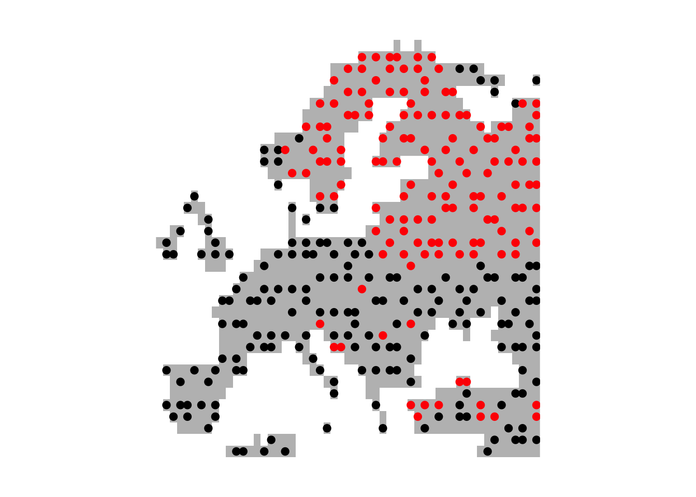
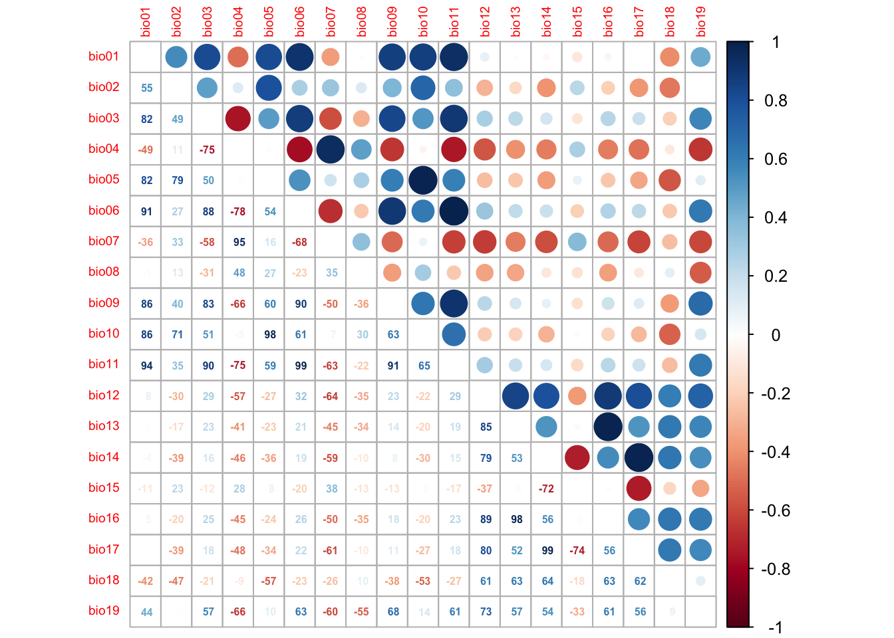

Introduction to SDMs: simple model fitting
RStudio project
Open the RStudio project that we created in the first session. I recommend to use this RStudio project for the entire course and within the RStudio project create separate R scripts for each session.
- Create a new empty R script by going to the tab “File”, select “New File” and then “R script”
- In the new R script, type
# Session 4: SDM introductionand save the file in your folder “scripts” within your project folder, e.g. as “4_SDM_intro.R”
1 Introduction
This session will introduce you to simple species distribution models (SDMs). Species distribution models (SDMs) are a popular tool in quantitative ecology (Franklin 2010; Peterson et al. 2011; Guisan, Thuiller, and Zimmermann 2017) and constitute the most widely used modelling framework in global change impact assessments for projecting potential future range shifts of species (IPBES 2016). There are several reasons that make them so popular: they are comparably easy to use because many software packages (e.g. Thuiller et al. 2009; Phillips, Anderson, and Schapire 2006) and guidelines (e.g. Elith, Leathwick, and Hastie 2008; Elith et al. 2011; Merow, Smith, and Silander Jr 2013; Guisan, Thuiller, and Zimmermann 2017) are available, and they have comparably low data requirements.
SDMs relate biodiversity observations (e.g. presence-only, presence/absence, abundance, species richness) at specific sites to the prevailing environmental conditions at those sites. Different statistical and machine-learning algorithms are available for this. Based on the estimated biodiversity-environment relationship, we can make predictions in space and in time by projecting the model onto available environmental layers (Figure 1).
![**Figure 1. Schematic representation of the species distribution modelling concept. First, biodiversity and environmental information are sampled in geographic space. Second, a statistical model (here, generalised linear model) is used to estimate the species-environment relationship. Third, the species–environment relationship can be mapped onto geographic layers of environmental information to delineate the potential distribution of the species. Mapping to the sampling area and period is usually referred to as interpolation, while transferring to a different time period or geographic area is referred to as extrapolation.**](figures/sdm.png)
Figure 1. Schematic representation of the species distribution modelling concept. First, biodiversity and environmental information are sampled in geographic space. Second, a statistical model (here, generalised linear model) is used to estimate the species-environment relationship. Third, the species–environment relationship can be mapped onto geographic layers of environmental information to delineate the potential distribution of the species. Mapping to the sampling area and period is usually referred to as interpolation, while transferring to a different time period or geographic area is referred to as extrapolation.
We distinguish five main modelling steps for SDMs: (i) conceptualisation, (ii) data preparation, (iii) model fitting, (iv) model assessment, and (v) prediction (Figure 2.). The last step (prediction) is not always part of SDM studies but depends on the model objective (Zurell et al. 2020). Generally, we distinguish three main objectives for SDMs: (a) inference and explanation, (b) mapping and interpolation, and (c) forecast and transfer. I recommend getting more familiar with critical assumptions and modelling decisions by studying the many excellent review articles (Guisan and Zimmermann 2000; Guisan and Thuiller 2005; Elith and Leathwick 2009) and textbooks on SDMs (Peterson et al. 2011; Franklin 2010; Guisan, Thuiller, and Zimmermann 2017).
I would also like to emphasise that model building is an iterative process and there is much to learn on the way. In consequence, you may want to revisit and improve certain modelling steps, for example improve the spatial sampling design. Because of that I like to regard model building as a cycle rather than a workflow with a pre-defined termination point (Figure 2.)(Zurell et al. 2020).

Figure 2. The main modelling cycle in species distribution modelling.
1.1 Prac overview
In this session, we will only work with Generalised Linear Models (GLMs) and concentrate on the first three model building steps (Figure 2.)
1.2 Generalised linear models (GLMs)
Why do we not simply use linear regression to fit our species-environment relationship? Well, strictly, ordinary least squares (OLS) linear regression is only valid if the response (or rather the error) is normally distributed and ranges (\(-\infty,\infty\)). OLS regression looks like this
\[E(Y|X)=\beta X+\epsilon\]
where \(E(Y|X)\) is the conditional mean, meaning the expected value of the response \(Y\) given the environmental predictors \(X\) (Hosmer and Lemeshow 2013). \(X\) is the matrix of predictors (including the intercept), \(\beta\) are the coefficients for the predictors, and \(\epsilon\) is the (normally distributed!) error term. \(\beta X\) is referred to as the linear predictor.
When we want to predict species occurrence based on environment, then the conditional mean \(E(Y|X)\) is binary and bounded between 0 (absence) and 1 (presence). Thus, the assumptions of OLS regression are not met. GLMs are more flexible regression models that allow the response variable to follow other distributions. Similar to OLS regression, we also fit a linear predictor \(\beta X\) and then relate this linear predictor to the mean of the response variable using a link function. The link function is used to transform the response to normality. In case of a binary response, we typically use the logit link (or sometimes the probit link). The conditional mean is then given by:
\[E(Y|X) = \pi (X) = \frac{e^{\beta X+\epsilon}}{1+e^{\beta X+\epsilon}}\]
The logit transformation is defined as: \[g(X) = ln \left( \frac{\pi (X)}{1-\pi (X)} \right) = \beta X+\epsilon\]
The trick is that the logit, g(X), is now linear in its parameters, is continuous and may range (\(-\infty,\infty\)). GLMs with a logit link are also called logistic regression models.
2 Conceptualisation
In the conceptualisation phase, we formulate our main research objectives and decide on the model and study setup based on any previous knowledge on the species and study system. An important point here is whether we can use available data or have to gather own biodiversity (and environmental) data, which would require deciding on an appropriate sampling design. Then, we carefully check the main underlying assumptions of SDMs, for example whether the species is in pseudo-equilibrium with environment and whether the data could be biased in any way (cf. chapter 5 in Guisan, Thuiller, and Zimmermann 2017). The choice of adequate environmental predictors, of modelling algorithms and of desired model complexity should be guided by the research objective and by hypotheses regarding the species-environment relationship. We can divide environmental variables into three types of predictors: resource variables, direct variables and indirect variables (Austin 1980; Guisan and Zimmermann 2000).
2.1 Example: Eurasian lynx
We aim at assessing potential climate change effects on the Eurasian lynx (Lynx lynx) in Europe (Figure 3), a middle-sized carnivore of Central, Northern and Easter Europe and Asia. First, we try to make ourselves familiar with Lynx ecology, for example through the IUCN website). Think about which factors could limit the distribution of lynx in Europe.
Eurasian lynx. Copyright Petr Katrochvil
3 Data preparation
In this step, the actual biodiversity and environmental data are gathered and processed. This concerns all data that are required for model fitting but also data that are used for making transfers. Here, we will use the rasterised mammal data set from practical 2 at 1° spatial resolution. This is a very coarse resolution and we need to be aware that we model coarse-scale environmental (or climate) relationships rather than fine-scale habitat choice.
Read in the data:
library(terra)
library(letsR)
load('data/r_mammals_eur_1deg.RData')
lynx_dist <- data.frame(r_mammals_eur$Presence_and_Absence_Matrix[,1:2],
occ = r_mammals_eur$Presence_and_Absence_Matrix[,'Lynx lynx'])
# plot the distribution
plot(terra::rast(lynx_dist, type='xyz'))We also retrieve climate data from worldclim (https://www.worldclim.org/). The coarsest resolution offered for download is 10 min, which we aggregate to 1° resolution to match the lynx data.
library(geodata)
# Set download=T if you haven't downloaded the data in the previous practical
clim <- geodata::worldclim_global(var = 'bio', res = 10, download = F, path = 'data')# Aggregate to 1° resolution
clim_1deg <- terra::aggregate(clim, 6)
# Merge with Lynx data
lynx_dist <- data.frame(lynx_dist,
terra::extract(x = clim_1deg, y = lynx_dist[,1:2]))
# The column names of the bioclim variables are a bit awkward, so let's change them to a more convenient form
head(lynx_dist)## Longitude.x. Latitude.y. occ ID wc2.1_10m_bio_1 wc2.1_10m_bio_2
## 1 -14.5 71.5 0 1 NA NA
## 2 -13.5 71.5 0 2 NA NA
## 3 -12.5 71.5 0 3 NA NA
## 4 -11.5 71.5 0 4 NA NA
## 5 -10.5 71.5 0 5 NA NA
## 6 -9.5 71.5 0 6 NA NA
## wc2.1_10m_bio_3 wc2.1_10m_bio_4 wc2.1_10m_bio_5 wc2.1_10m_bio_6
## 1 NA NA NA NA
## 2 NA NA NA NA
## 3 NA NA NA NA
## 4 NA NA NA NA
## 5 NA NA NA NA
## 6 NA NA NA NA
## wc2.1_10m_bio_7 wc2.1_10m_bio_8 wc2.1_10m_bio_9 wc2.1_10m_bio_10
## 1 NA NA NA NA
## 2 NA NA NA NA
## 3 NA NA NA NA
## 4 NA NA NA NA
## 5 NA NA NA NA
## 6 NA NA NA NA
## wc2.1_10m_bio_11 wc2.1_10m_bio_12 wc2.1_10m_bio_13 wc2.1_10m_bio_14
## 1 NA NA NA NA
## 2 NA NA NA NA
## 3 NA NA NA NA
## 4 NA NA NA NA
## 5 NA NA NA NA
## 6 NA NA NA NA
## wc2.1_10m_bio_15 wc2.1_10m_bio_16 wc2.1_10m_bio_17 wc2.1_10m_bio_18
## 1 NA NA NA NA
## 2 NA NA NA NA
## 3 NA NA NA NA
## 4 NA NA NA NA
## 5 NA NA NA NA
## 6 NA NA NA NA
## wc2.1_10m_bio_19
## 1 NA
## 2 NA
## 3 NA
## 4 NA
## 5 NA
## 6 NAnames(lynx_dist)[5:23] <- c(paste0('bio0',1:9), paste0('bio',10:19))
# Exclude NAs (cells without climate data)
lynx_dist <- na.exclude(lynx_dist)The data provide us with presence and absence information. However,
to avoid problems with spatial autocorrelation in our SDMs, we should
spatially thin these data such that they do not contain adjacent cells.
There are different ways to do the thinning. A particularly fast one is
the gridSample() function in the dismo
package. In this case, we use gridSample() to sample only
one presence record within a 2° neighbourhood.
library(dismo)## Loading required package: raster## Loading required package: sp# We create a background map at 1° spatial resolution with European land masses - this is only for plotting purposes
bg <- terra::rast(lynx_dist[,1:3], type='xyz')
values(bg)[!is.na(values(bg))] <- 0
# We only want to have one record per 2°x2° and use a mask to achieve this
mask <- terra::aggregate(bg,2)
# Thinned coordinates
set.seed(54321)
xy <- dismo::gridSample(lynx_dist[,1:2], mask, n=1)
# Checking number of data points
nrow(xy)## [1] 323nrow(lynx_dist)## [1] 1046# Reducing the Lynx data
lynx_thinned <- merge(xy,lynx_dist)
# Plot European land mass
plot(bg,col='grey',axes=F,legend=F)
# Plot presences in red and absences in black
points(lynx_thinned[,1:2],pch=19,col=c('black','red')[as.factor(lynx_thinned$occ)])
4 Model fitting
4.1 Fitting our first GLM
Before we start into the complexities of the different model fitting
steps, let us look at a GLM in more detail. We fit our first GLM with
only one predictor assuming a linear relationship between response and
predictor. The glm function is contained in the R
stats package. We need to specify a formula describing
how the response should be related to the predictors, and the
data specifying the data frame that contains the response and
predictor variables, and a family argument specifying the type
of response and the link function. In our case, we use the
logit link in the binomial family.
# We first fit a GLM for the bio11 variable assuming a linear relationship:
m1 <- glm(occ ~ bio11, family="binomial", data= lynx_thinned)
# We can get a summary of the model:
summary(m1) ##
## Call:
## glm(formula = occ ~ bio11, family = "binomial", data = lynx_thinned)
##
## Deviance Residuals:
## Min 1Q Median 3Q Max
## -2.4451 -0.6179 -0.2026 0.6534 2.8198
##
## Coefficients:
## Estimate Std. Error z value Pr(>|z|)
## (Intercept) -1.45453 0.20828 -6.984 2.88e-12 ***
## bio11 -0.34571 0.03669 -9.423 < 2e-16 ***
## ---
## Signif. codes: 0 '***' 0.001 '**' 0.01 '*' 0.05 '.' 0.1 ' ' 1
##
## (Dispersion parameter for binomial family taken to be 1)
##
## Null deviance: 444.40 on 322 degrees of freedom
## Residual deviance: 275.65 on 321 degrees of freedom
## AIC: 279.65
##
## Number of Fisher Scoring iterations: 54.1.1 Deviance and AIC
Additional to the slope values, there are a few interesting metrics printed in the output called deviance and AIC. These metrics tell us something about how closely the model fits the observed data.
Basically, we want to know whether a predictor is “important”. We thus need to evaluate whether a model including this variable tells us more about the response than a model without that variable (Hosmer and Lemeshow 2013). Importantly, we do not look at the significance level of predictors. Such p-values merely tell us whether the slope coefficient is significantly different from zero. Rather, we assess whether the predicted values are closer to the observed values when the variable is included in the model versus when it is not included.
In logistic regression, we compare the observed to predicted values using the log-likelihood function:
\[L( \beta ) = ln[l( \beta)] = \sum_{i=1}^{n} \left( y_i \times ln[\pi (x_i)] + (1-y_i) \times ln[1- \pi (x_i)] \right)\]
\(L( \beta )\) is the Likelihood of the fitted model. From this, we can calculate the deviance \(D\) defined as:
\[D = -2 \times L\]
In our model output, the deviance measure is called
Residual deviance. This deviance is an important measure
used for comparing models. For example, it serves for the calculation of
Information criteria that are used for comparing models
containing different numbers of parameters. One prominent measure is the
Akaike Information Criterion, usually abbreviated as AIC. It is
defined as: \[AIC = -2 \times L + 2 \times
(p+1) = D + 2 \times (p+1)\]
where \(p\) is the number of regression coefficients in the model. AIC thus takes into account model complexity. In general, lower values of AIC are preferable.
We can also use the deviance to calculate the Explained
deviance \(D^2\), which is the
amount of variation explained by the model compared to the null
expectation: \[D^2 = 1 -
\frac{D(model)}{D(Null.model)}\] The model output also provides
the Null deviance, so we can easily calculate the explained
deviance \(D^2\).
4.2 More complex GLMs
We can also fit quadratic or higher polynomial terms (check
?poly) and interactions between predictors:
- the term I()indicates that a variable should be
transformed before being used as predictor in the formula
- poly(x,n) creates a polynomial of degree \(n\): \(x + x^2 +
... + x^n\)
- x1:x2 creates a two-way interaction term between
variables x1 and x2, the linear terms of x1 and x2 would have to be
specified separately
- x1*x2 creates a two-way interaction term between
variables x1 and x2 plus their linear terms
- x1*x2*x3 creates the linear terms of the three variables,
all possible two-way interactions between these variables and the
three-way interaction
Try out different formulas:
# Fit a quadratic relationship with bio11:
m1_q <- glm(occ ~ bio11 + I(bio11^2), family="binomial", data= lynx_thinned)
summary(m1_q)
# Or use the poly() function:
summary( glm(occ ~ poly(bio11,2) , family="binomial", data= lynx_thinned) )
# Fit two linear variables:
summary( glm(occ ~ bio11 + bio8, family="binomial", data= lynx_thinned) )
# Fit three linear variables:
summary( glm(occ ~ bio11 + bio8 + bio17, family="binomial", data= lynx_thinned) )
# Fit three linear variables with up to three-way interactions
summary( glm(occ ~ bio11 * bio8 * bio17, family="binomial", data= lynx_thinned) )
# Fit three linear variables with up to two-way interactions
summary( glm(occ ~ bio11 + bio8 + bio17 +
bio11:bio8 + bio11:bio17 + bio8:bio17,
family="binomial", data= lynx_thinned) )Exercise:
Compare the different models above.
- Which model is the best in terms of AIC?
- What is the explained deviance of the different models?
- HINTS: you can extract the metrics using
AIC(m1),deviance(m1)andm1$null.deviance
4.3 Important considerations during model fitting
Model fitting is at the heart of any SDM application. Important aspects to consider during the model fitting step are:
- How to deal with multicollinearity in the environmental data?
- How many variables should be included in the model (without overfitting) and how should we select these?
- Which model settings should be used?
- When multiple model algorithms or candidate models are fitted, how to select the final model or average the models?
- Do we need to test or correct for non-independence in the data (spatial or temporal autocorrelation, nested data)?
- Do we want to threshold the predictions, and which threshold should be used?
More detailed descriptions on these aspects can be found in Franklin (2010) and in Guisan, Thuiller, and Zimmermann (2017).
4.4 Collinearity and variable selection
GLMs (and many other statistical models) have problems to fit stable parameters if two or more predictor variables are highly correlated, resulting in so-called multicollinearity issues (Dormann et al. 2013). To avoid these problems here, we start by checking for multi-collinearity and by selecting an initical set of predictor variables. Then, we can fit our GLM including multiple predictors and with differently complex response shapes. This model can then be further simplified by removing “unimportant” predictors.
4.4.1 Correlation among predictors
We first check for pairwise correlations among predictors. Generally, correlations below |r|<0.7 are considered unproblematic (or below |r|<0.5 as more conservative threshold).
library(corrplot)
# We first estimate a correlation matrix from the predictors.
# We use Spearman rank correlation coefficient, as we do not know
# whether all variables are normally distributed.
cor_mat <- cor(lynx_thinned[,-c(1:3)], method='spearman')
# We can visualise this correlation matrix. For better visibility,
# we plot the correlation coefficients as percentages.
corrplot.mixed(cor_mat, tl.pos='lt', tl.cex=0.6, number.cex=0.5, addCoefasPercent=T)
Several predictor variables are highly correlated. One way to deal with this issue is to remove the “less important” variable from the highly correlated pairs. For this, we need to assess variable importance.
4.5 Model selection
Now that we have selected a set of weakly correlated variables, we can fit the full model and then simplify it. The latter is typically called model selection. Here, I only use the two most important variables and include linear and quadratic terms in the full model.
# Fit the full model:
m1 <- glm( occ ~ bio11 + I(bio11^2) + bio10 + I(bio10^2),
family='binomial', data=lynx_thinned)
# Inspect the model:
summary(m1)##
## Call:
## glm(formula = occ ~ bio11 + I(bio11^2) + bio10 + I(bio10^2),
## family = "binomial", data = lynx_thinned)
##
## Deviance Residuals:
## Min 1Q Median 3Q Max
## -2.3959 -0.5871 -0.0365 0.5737 4.0630
##
## Coefficients:
## Estimate Std. Error z value Pr(>|z|)
## (Intercept) -11.853488 3.090980 -3.835 0.000126 ***
## bio11 -0.363686 0.077203 -4.711 2.47e-06 ***
## I(bio11^2) -0.002478 0.008081 -0.307 0.759147
## bio10 1.459081 0.393855 3.705 0.000212 ***
## I(bio10^2) -0.048595 0.012661 -3.838 0.000124 ***
## ---
## Signif. codes: 0 '***' 0.001 '**' 0.01 '*' 0.05 '.' 0.1 ' ' 1
##
## (Dispersion parameter for binomial family taken to be 1)
##
## Null deviance: 444.4 on 322 degrees of freedom
## Residual deviance: 256.1 on 318 degrees of freedom
## AIC: 266.1
##
## Number of Fisher Scoring iterations: 6How much deviance is explained by our model? The function
expl_deviance() is also contained in the
mecofun package. As explained earlier, we can calculate
explained deviance by quantifying how closely the model predictions fit
the data in relation to the null model predictions.
# Explained deviance:
expl_deviance(obs = lynx_thinned$occ,
pred = m1$fitted)## [1] 0.423722We can simplify the model further by using stepwise variable
selection. The function step() uses the AIC to compare
different subsets of the model. Specifically, it will iteratively drop
variables and add variables until the AIC cannot be improved further
(meaning it will not decrease further).
m_step <- step(m1) # Inspect the model:
summary(m_step)##
## Call:
## glm(formula = occ ~ bio11 + bio10 + I(bio10^2), family = "binomial",
## data = lynx_thinned)
##
## Deviance Residuals:
## Min 1Q Median 3Q Max
## -2.4470 -0.5948 -0.0410 0.5730 3.9948
##
## Coefficients:
## Estimate Std. Error z value Pr(>|z|)
## (Intercept) -12.02724 3.05541 -3.936 8.27e-05 ***
## bio11 -0.34456 0.04350 -7.921 2.35e-15 ***
## bio10 1.47632 0.39156 3.770 0.000163 ***
## I(bio10^2) -0.04900 0.01263 -3.878 0.000105 ***
## ---
## Signif. codes: 0 '***' 0.001 '**' 0.01 '*' 0.05 '.' 0.1 ' ' 1
##
## (Dispersion parameter for binomial family taken to be 1)
##
## Null deviance: 444.40 on 322 degrees of freedom
## Residual deviance: 256.19 on 319 degrees of freedom
## AIC: 264.19
##
## Number of Fisher Scoring iterations: 6# Explained deviance:
expl_deviance(obs = lynx_thinned$occ,
pred = m_step$fitted)## [1] 0.4235096The final model only selected the linear terms for bio11 and bio8. The explained deviance is a tiny bit lower than for the quadratic model, but the linear model is more parsimonious.
Finally, don’t forget to save the data.
save(bg, clim_1deg, lynx_thinned, pred_sel, file='data/lynx_thinned.RData')For running the homeworks, don’t forget to save your workspace!
save.image('data/4_SDM_intro.RData')Exercise:
Fit the full model containing all weakly correlated variables.
- Look up the eight weakly correlated variables in the object
pred_sel. - Define a full model with these eight variables including their linear and quadratic terms.
- Run the full model.
- Simplify the model using stepwise variable selection
step() - Compare the full model and the reduced model in terms of AIC and explained deviance.